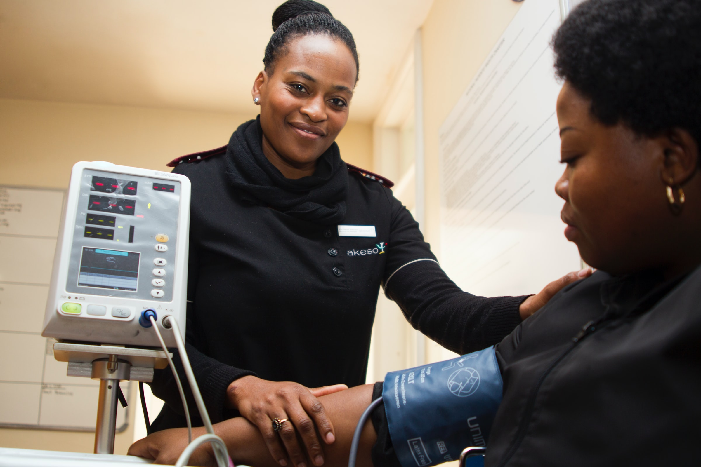
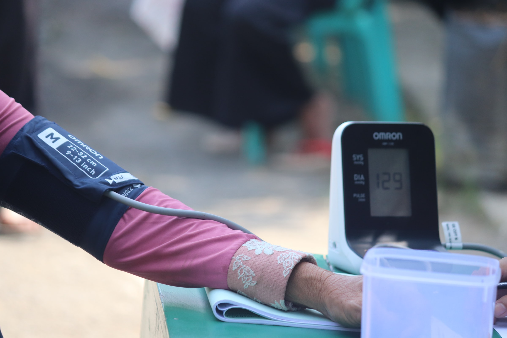

Cerca de 38,1 milhões de brasileiros com 18 anos ou mais são afetados pela hipertensão arterial ou mais conhecida como pressão alta.
Embora seja um fator de risco, a hipertensão não ocorre apenas em pessoas obesas e sedentárias, assim, podendo afetar pessoas sem sobrepeso e ativas.
A hipertensão pode ser hereditária, cerca de 30% de pessoas com pais com pressão alta também serão hipertensas.
A alimentação equilibrada é um dos pilares para evitar doenças cardíacas, o conjunto da atividade física e a alimentação saudável proporcionam a redução do excesso de gordura, a melhora da condição física, reduz o estresse e melhora o humor.
